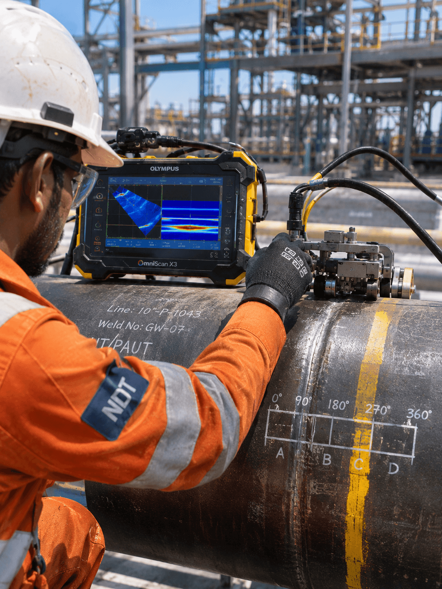

Safety first
Risk assessment, permits and radiation controls before the first probe touches steel.
Tech NDT Services is a team of certified inspection engineers and technicians for refineries, pipelines, tank farms and fabrication yards.

Pressure vessels, pipelines, storage tanks, railway assets and offshore structures fail where flaws go unseen. We find them early, report them clearly and keep your plant running.
Our crews work shoulder to shoulder with plant owners, EPC contractors and fabrication yards. We recommend the technique that suits the defect, the material and your shutdown window, not the one that is easiest for us to sell.
Every job starts with a written procedure and ends with a signed, traceable report. In between, you get daily progress updates, so repairs and re-shoots happen while the shutdown clock is still running.
Risk assessment, permits and radiation controls before the first probe touches steel.
We report what the data shows. No pressure to pass a weld, no incentive to fail one.
Procedures, calibration, data and images tied to every report so it stands up to audit.
Crews, equipment and permits ready for turnarounds and emergency call-outs.

Radiography, work at height and live plants leave no room for improvisation. Safety controls are part of the scope, not an add-on.

From manual UT and radiography to phased array and TOFD with recorded scans, you do not need to coordinate several contractors. One team scopes, inspects and reports.
Procedures and reports are written to the code your project specifies.